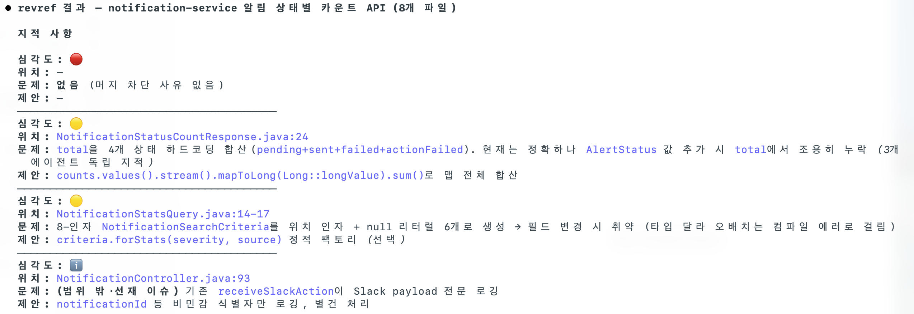
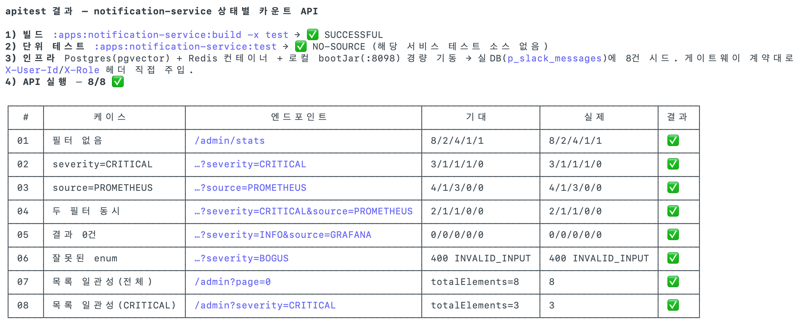
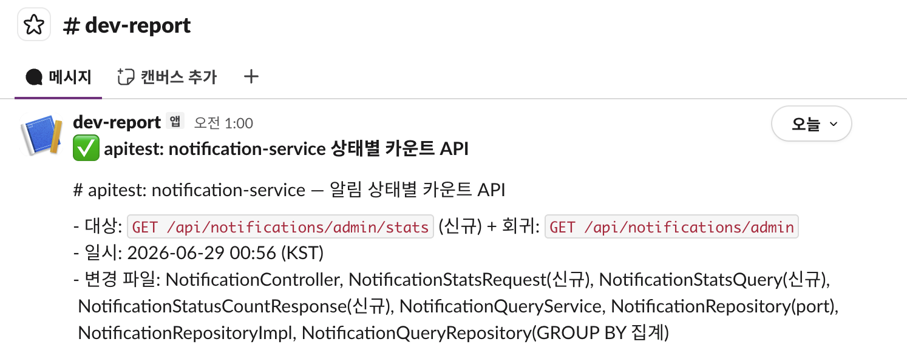

드래그: 이동 · 휠: 배율 · ESC: 닫기
개발을 AI에게 일임하는 것이 아니라, AI가 이 코드베이스 규칙을 벗어나지 못하도록 통제·감독하는 체계를 설계합니다.
AI의 결과물은 빠르고 그럴듯하지만 맥락을 모른 채 자주 틀리기에, antcamp(가상 주식 거래 MSA · 도메인 서비스 7개)에
규칙 문서(SSOT) · 자동 검토/테스트 스킬 · 가드레일을 둘러 AI의 출력은 사람의 검증을 통과해야만 코드베이스에 반영되도록 했습니다.
코드의 최종 판단과 책임은 항상 사람이 집니다.
AI가 일관되게 일하려면 "무엇이 규칙인가"가 한 곳에 있어야 합니다. 세 문서가 서로를 참조하며
구조 · 규칙 · 절차를 나눠 가지고, CI 리뷰 봇(.coderabbit.yaml)과 동일한 기준을 공유합니다.
X-User-Id 신뢰 경계), Config Server 외부화, common 모듈 규약.record VO·동시성/분산락·로깅 보안·common 재사용. 위반은 심각도로 분류.@Transactional 안에서 외부 API 호출(커넥션 점유)@Setter/@Data — 상태 변경은 의미 있는 메서드로record · Strong Type VO(primitive obsession 회피)LAZY 기본, 필요 시 fetch join
일반론이 이 코드베이스엔 안 맞는 경우, 왜 예외인지를 규칙 문서에 직접 박아 AI 리뷰가 같은 지적을 반복하지 않게 합니다.
예: "모든 record의 compact constructor에 검증을 넣으라"는 일반 규칙에 대해 —
record는 발행 측에서 검증되었다고 가정하므로 compact constructor 검증의 예외로 둔다.규칙은 "지켜야 한다"로 끝나지 않게, 작업이 끝나면 자동으로 검토·검증·보고가 돌도록 슬래시 스킬과 스크립트로 묶었습니다.
| 워크플로우 | 트리거 | 수단 |
|---|---|---|
| A · 코드 작업 후 자동 검토 | 새 파일/메서드 추가, 50줄+ 수정, common/ 변경 | /revref 스킬 |
| B · 빌드→테스트→API 실행 | 런타임 동작에 영향 주는 변경 완료 | /apitest 스킬 |
| C · 완료 후 Slack 보고 | A/B 또는 주요 작업 완료 | notify-slack.sh |
git diff 변경분(--context)이나 지정 파일을 대상으로, 차원별 리뷰 에이전트를 병렬 실행해 위반을 심각도와 근거(conventions §N)와 함께 보고합니다. 같은 일반론 지적이 반복되면 규칙 문서로 흡수합니다.
병렬 검토 차원 — ① 아키텍처/레이어/DDD(§2,5,7) ② Spring/JPA 내부(§1) ③ 동시성(§6) ④ 타입 안정성·공통 모듈(§4,9). --context 모드에서는 정확성(/code-review)·보안(/security-review) 검토까지 통합해 🔴/🟡 + 파일:라인 + 근거 → 제안 형식으로 종합합니다.

CLICK TO ZOOMbuild -x test → test. 실패 시 컴파일/테스트 원인을 요약하고 여기서 중단, 결과 저장 후 실패 보고.:8080/actuator/health 폴링 후 scenario*.http를 게이트웨이 기준으로 실행, 단계별 상태코드·본문으로 통과/실패 판정.summary.md 표·요청·응답 저장. 토큰·시크릿은 마스킹, 결과물은 .gitignore.
CLICK TO ZOOM# 성공/실패 + 제목 + 본문(또는 summary 파일)으로 Incoming Webhook 보고 scripts/notify-slack.sh --status success \ --title "apitest: trade-service" \ --file "tests/results/20260628_153000/summary.md" # 웹훅 미설정 시 → 경고만 출력하고 정상 종료 (빌드/작업을 깨지 않음)
외부 전송이므로 처음에는 보고 대상·내용을 사용자에게 확인받고, 사소한 변경(문서/오타)은 보고하지 않습니다.

생성을 빠르게 하되, 위험한 자동화는 막고(가드레일) AI가 틀린 맥락으로 추측하지 않게(컨텍스트) 합니다.
KIS_*/*_API_KEY/비밀번호 평문 금지(§8)tests/results/)은 커밋 대상 아님(.gitignore)X-User-Id만 신뢰application.yaml 찾지 말 것", 실제 설정은 Config 레포(dev)rag-architecture.md, 알림 작업 → aiops-architecture.mdAI 생성물은 빠르지만 이 코드베이스의 맥락을 모른 채 그럴듯하지만 틀린 코드를 자신 있게 내놓습니다. 그 실수가 코드베이스에 들어오지 못하도록 규칙(SSOT)·자동 검토/검증·가드레일로 여러 겹의 관문을 두고, 사람은 생성이 아니라 감독과 최종 판단에 시간을 씁니다. AI는 빨라지되 사람의 통제 밖에서 코드를 확정하지 못합니다. 이 관리 체계는 모델·도구가 바뀌어도 남습니다.